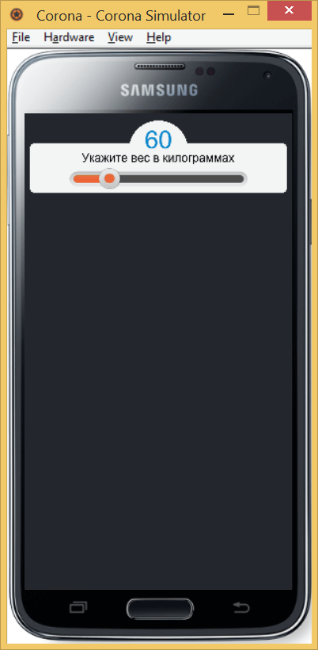

Слайдер
Слайдер это такой ползунок, с помощью которого можно указывать числовое значение в заданном диапазоне. Слайдер в Corona на деле является картинкой особым образом подготовленной в графическом редакторе. Также необходимо написать код, который указывает движку, какая часть картинки за что отвечает.
Для начала находим подходящее изображение слайдера или рисуем его сами.
Исходное изображение слайдера
Далее разбиваем эту картинку на составляющие фрагменты, они показаны ниже.
| Левый край слайдера | |
| Средняя часть слайдера | |
| Правый край слайдера | |
| Заполнитель | |
| Ползунок |
Теперь соединяем эти фрагменты в новое изображение слайдера.
Подготовленное изображение слайдера
Для каждого фрагмента в коде надо будет указать координаты его левого верхнего угла относительно целой картинки, а также ширину и высоту. Несмотря на относительную простоту данных, легко совершить ошибку и тогда слайдер будет выглядеть причудливо, а не так как нам требуется. На первых порах рекомендуем использовать программу TexturePacker, которая готовит изображения и код для работы в Corona. Программа платная, но доступна полнофункциональная пробная версия, её должно хватить на некоторое время. Скачать можно на сайте разработчика программы.
https://www.codeandweb.com/texturepacker
Слайдер в Corona SDK имеет диапазон от 0 до 100, поэтому нам надо значение слайдера интерполировать в значение из нашего диапазона. И наоборот, наше значение перевести в значения слайдера.
Для примера возьмём возраст, остальные вводимые параметры делаются по аналогии. Вводим две переменные, они задают минимальное и максимальное допустимое значение возраста. Формула Маффина-Джеора, лежащая в основе нашего приложения, корректно работает только с 18-летнего возраста. Поэтому минимальный возраст устанавливаем 18, максимальный же произвольный. Будем считать, что 98-летние люди тоже захотят воспользоваться нашим приложением. Итак, с помощью слайдера получаем возраст в диапазоне [18, 98] через следующий код.
ageMin = 18; -- минимальный возраст
ageMax = 98; -- максимальный возраст
-- вводимый пользователем возраст
age = ageMin + (ageMax - ageMin)*event.value/100;Здесь event.value — это текущее значение слайдера, оно лежит в интервале [0, 100].
И, наоборот, зная введённый пользователем возраст, хранимый в переменной age, мы можем интерполировать его в значение слайдера по следующей формуле.
100*(age - ageMin)/(ageMax – ageMin));С весом обстоит немного проще. У нас он меняется от 40 до 140, поэтому достаточно к минимальному значению weightMin прибавить значение слайдера и так получить введённый пользователем возраст. Или воспользоваться формулами выше, тогда мы не будем привязаны к стобальной шкале и можем указывать произвольную минимальную и максимальную величину возраста.
Переходим к коду. Для начала нам потребуется подключить библиотеку виджетов, куда входят слайдер и кнопки. В самом верху нашей программы пишем следующую строку.
local widget = require("widget");После создания самого слайдера нам надо реагировать на движения ползунка — сохранять введённое значение в переменную weight и менять значение текста myWeight. Это делается через listener — функцию, которая вызывает обработчик событий. Можно написать отдельную функцию и указать её имя, но так как кода у нас мало, то мы его вставим здесь же.
listener = function(event)
weight = math.round(weightMin + (weightMax - weightMin)*event.value/100);
myWeight.text = weight; -- выводим новый текст
endТекст менять легко через метод text, добавляемый к имени любого текстового объекта. Просто присваиваем значение и текст становится другим. Также поясним, зачем требуется округление до целого числа через math.round. Сам слайдер это не набор целых чисел 0,1,2...,100. При движении ползунка мы вполне можем получить число вида 3.14, к тому же при интерполяции значения слайдера в необходимый нам диапазон возможно появление вещественных чисел. Так что округление гарантирует, что на выходе мы всегда получим целое число.
Окончательный код нашего приложения с геометрическими фигурами, текстом и слайдером показан ниже.
local widget = require("widget");
weightMin = 40; -- минимальный вес
weightMax = 140; -- максимальный вес
weight = 60; -- вес пользователя
-- прячем строку состояния
display.setStatusBar(display.HiddenStatusBar);
-- фон приложения
display.setDefault("background", 37/255, 39/255, 46/255);
-- цвет текста по умолчанию
display.setDefault("fillColor", 0);
-- ширина контента
w = display.contentWidth - 20;
-- Вес
------------------------------------------------------------------
-- создаём группу для ввода веса
local weightGroup = display.newGroup();
-- добавляем круг
display.newCircle(weightGroup, display.contentCenterX, 74, 60):setFillColor(244/255);
-- прямоугольник со скруглёнными уголками
display.newRoundedRect(weightGroup, display.contentCenterX, 110, w, 100, 10):setFillColor(244/255);
-- выводим текст
display.newText(weightGroup, "Укажите вес в килограммах", display.contentCenterX, 90, native.systemFont, 24);
-- выводим текущий вес
local myWeight = display.newText({
parent = weightGroup,
text = weight,
x = display.contentCenterX, y = 53,
font = native.systemFont,
fontSize = 50,
});
-- меняем цвет текста
myWeight:setFillColor(0/255, 131/255, 202/255);
-- параметры слайдера
local optionsSlider = {
frames = {
{ x=0, y=0, width=15, height=45 },
{ x=16, y=0, width=130, height=45 },
{ x=332, y=0, width=15, height=45 },
{ x=153, y=0, width=15, height=45 },
{ x=353, y=0, width=47, height=47 },
},
sheetContentWidth = 400,
sheetContentHeight = 45
}
-- выводим слайдер для ввода веса
weightSlider = widget.newSlider {
sheet = graphics.newImageSheet("img/slider.png", optionsSlider),
leftFrame = 1, middleFrame = 2, rightFrame = 3, fillFrame = 4, handleFrame = 5,
frameWidth = 15, frameHeight = 45,
handleWidth = 45, handleHeight = 45,
-- координаты слайдера
top = 110, left= 91,
-- размеры слайдера
width = 360, height=47,
orientation = "horizontal",
-- устанавливаем положение ползунка веса
value = 100*(weight - weightMin)/(weightMax - weightMin),
-- выводим вес при перемещении слайдера
listener = function(event)
--weight = weightMin + event.value; -- простой вариант
-- универсальный вариант
weight = math.round(weightMin + (weightMax - weightMin)*event.value/100);
myWeight.text = weight; -- выводим новый текст
end
}Вот как выглядит результат в эмуляторе.

Вид слайдера в эмуляторе
См. также
Документация по созданию слайдера
http://docs.coronalabs.com/api/library/widget/newSlider.html
TexturePacker
https://www.codeandweb.com/texturepacker

Все материалы сайта доступны по лицензии Creative Commons «Attribution-NonCommercial» («Атрибуция — Некоммерческое использование») 4.0 Всемирная, если не указано иное.